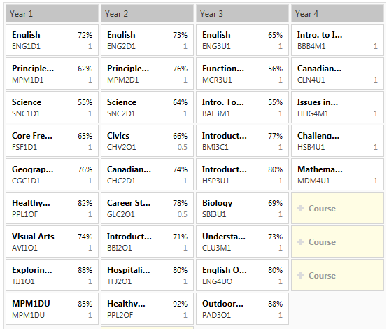

School and goals
Academics
The original site described Taylor's Grade 9–12 academic record and plans while attending White Oaks Secondary School, with graduation anticipated in 2016. It also noted two summer school courses: Grade 12 mathematics (85%) and English (80%).

Looking ahead
At the time, career interests included health sciences—such as kinesiology—or business, while continuing to develop as a hockey player.
Academic details are historical and are reproduced from the original site. The marks graphic is preserved from that archive.